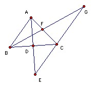
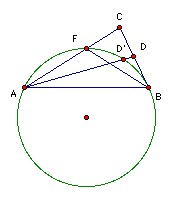

ABC is a triangle with angle bisectors AD and BF. The lines AD, BF meet the line through C parallel to AB at E and G respectively, and FG = DE. Show that CA = CB.
Solution
Solution by David Krumm

Since EG is parallel to AB, triangles AFB and CFG are similar, so BF/FG = AF/CF = AB/BC, so FG = BC·BF/AB. Similarly, DE = AC·AD/AB. So AC·AD = BC·BF. But we are now home, because the Steiner-Lehmus theorem states that the smaller angle corresponds to the longer angle bisector. So if AC < BC, then AD < BF (and similarly if AC > BC, then AD > BF).

To prove Steiner-Lehmus (not necessary), suppose ∠A < ∠ B as shown. Take D' on the segment AD such that ∠FCD' = ∠A/2. Then AFD'B is cyclic. ∠FAB < ∠D'AB < 90o, so the corresponding chords CF < AD'. But AD' < AD, so CF < AD as required.

© John Scholes
jscholes@kalva.demon.co.uk
28 Nov 2003
Last corrected/updated 28 Nov 03